사회조사분석사-2급 (2000-03-12 기출문제)
1과목: 조사방법론 I
1. 개념타당성은 심리적인 특성의 측정과 관련된 개념으로 행동과학의 연구에 특히 중요하다. 다음 중 개념타당성의 구성요소가 아닌 것은?
- 이해타당성
- 표면타당성
- 집중타당성
- 판별타당성
(정답률: 80%)

2. 남자 200명, 여자 100명으로 구성된 집단에서 남녀별로 층화표집을 하여 남자 40명, 여자 20명을 추출하였다. 남자들이 표본평균이 20, 여자들의 표본평균이 30이라면 집단 전체의 총 평균은 어느 정도인가?
- 23
- 25
- 27
- 30
(정답률: 60%)
3. 신뢰도(reliability)와 관련된 진술 중 올바른 것은?
- 체계적 오차(systematic error)가 작을수록 신뢰도가 높다.
- 표본의 수가 클수록 신뢰도는 높아진다.
- 측정값의 분산에 대한 진실값(참값)의 분산의 비율이다.
- 신뢰도계수는 특수한 경우에 음(negative)의 값을 가질 수 있다.
(정답률: 40%)
4. 다음 중 같은 응답자를 주기적으로 추적하여 조사하는 조사의 명칭은?
- 서베이 리서치(survey research)
- 패널(panel)조사
- 여론(opinion)조사
- 시계열(time-series)조사
(정답률: 82%)
5. 다음 측정 수준에 대한 설명 중 틀린 것은?
- 각 범주간에 크고 작음의 관계가 판단될 때 이는 서열척도이다.
- 비율척도에서 0값은 자의적으로 부여되었으므로 절대적 의미를 가질 수 없다.
- 각 범주에 부여되는 수치가 계량적 의미를 갖지 못하는 경우, 이는 명목척도이다.
- 각 대상간의 거리나 크기를 표준화된 척도로 표시 할 수 있다면 이는 등간척도이다.
(정답률: 74%)
6. 다음은 조사연구의 목적들이다. 변인(변수)과 변인간의 인과관계를 밝히는 것은?
- 탐색
- 기술
- 설명
- 평가
(정답률: 85%)
7. 특정 연구에 대한 사전 지식이 부족할 때는 예비조사 또는 사전조사(pre-test)에서 사용하기에 적절한 질문의 유형은?
- 개방형 질문
- 폐쇄형 질문
- 가치중립적 질문
- 유도성 질문
(정답률: 65%)
8. 다음 중 면접조사현장에서 조사의 질을 높이기 위한 일이라고 생각할 수 없는 것은?
- 지도원의 면접지도
- 지도원의 완성된 조사표 심사
- 조사항목별 부호화 작업 및 검토
- 조사원의 조사표 내 항목의 일관성 점검
(정답률: 63%)
9. 질문하기 어려운 사항을 응답자가 인식하지 못하는 사이에 순차적으로 질문하여 대답을 얻어내는 질문방식은 무엇인가?
- 선택식 질문
- 계통식 질문
- 개방식 질문
- 평정식 질문
(정답률: 48%)
10. 우리는 사회조사를 실시할 때 종종 여러 문항으로 이루어진 척도를 만든다. 다음 중 척도를 만드는 까닭이 아닌 것은?
- 척도는 측정의 신뢰도를 높여주기 때문이다.
- 단일문항의 불안정성을 줄일 수 있기 때문이다.
- 한 문항으로는 한 개념을 쉽게 측정할 수 없는 경우가 많기 때문이다.
- 일반적으로 단일문항으로 측정하는 것이 여러 문항으로 측정하는 것보다 측정오차가 더 작기 때문이다.
(정답률: 65%)
11. 다음의 질문방식은 어디에 속하는가?
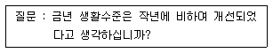
- 서열식 질문
- 평정식 질문
- 다항선택식 질문
- 체크리스트
(정답률: 60%)
12. 계량화된 자료의 분석보다는 연구자가 연구대상에 직접 접근하여 그들의 입장과 관점에서 일상적인 삶의 실제를 이해하려는 연구방법은?
- 실증적 연구방법
- 해석적 연구방법
- 실험 연구방법
- 조사 연구방법
(정답률: 44%)
13. 자료수집방법들에 대한 비교로 옳은 것은?
- 인터넷 조사는 우편조사에 비해 비용이 많이 든다.
- 전화조사는 면접조사에 비해서 시간이 많이 든다.
- 인터넷 조사에서는 시각보조자료의 활용이 곤란하다.
- 면접조사는 다른 조사에 비해 래포(rapport)의 형성이 용이하다.
(정답률: 84%)
14. 예시된 설문 문항의 측정수준은?
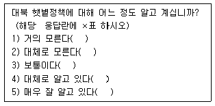
- 명목척도(범주척도)
- 서열척도(순위척도)
- 등간척도(구간척도)
- 비율척도(비례척도)
(정답률: 31%)
15. 논리적 타당도(logical validity)또는 표면타당도(face validity)라고도 불리는 것은?
- 내용 타당도
- 경험적 타당도
- 구성체 타당도
- 기준관련 타당도
(정답률: 65%)
16. 아래와 같이 가정할 때 X, Y, Z에 대한 바른 설명은?
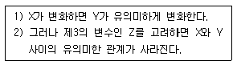
- X는 종속변수이다.
- Z는 매개변수이다.
- Z는 억제변수이다.
- X-Y의 관계는 허위적(spurious)관계이다.
(정답률: 28%)
17. 측정오차가 체계적인 패턴을 띠게 될 때는 무엇이 문제가 되는가?
- 신뢰도
- 타당도
- 검증도
- 일반화
(정답률: 52%)
18. 경험적 연구방법에 대한 다음의 설명 중 맞는 것은?
- 실험은 연구자가 독립변수와 종속변수 모두를 통제하는 연구방법이다.
- 심리상태를 파악하는 데는 관찰에 의한 연구방법이 효과적이다.
- 내용분석은 어린이나 언어가 통하지 않는 조사대상자에 대한 연구방법이 자주 사용된다.
- 대규모 모집단을 연구하는 데는 질문지를 이용한 조사연구가 효과적이다.
(정답률: 알수없음)
19. 사전검사(시험조사:pre-test)의 목적이라고 할 수 없는 것은?
- 설문지의 확정
- 실시조사관리의 점검
- 사후조사결과와 비교
- 조사업무량의 조정
(정답률: 39%)
20. 전화조사에 대한 설명으로 부적합한 것은?
- 전화조사는 시청각 자료를 이용하기 곤란하다.
- 전화조사는 신속성이 장점이다.
- 전화조사는 우편조사에 비해 응답내용은 확인하기 쉽다.
- 전화조사는 초기부터 표본의 대표성을 확보하기 쉬워서 많이 이용되었다.
(정답률: 55%)
21. 사회조사에서 척도에 대한 설명으로 잘못된 것은?
- 척도는 여러 개의 지표를 하나의 점수로 나타낸다.
- 척도를 통하여 하나의 지표로서 제대로 측정하기 어려운 복합적인 개념을 측정할 수 있다.
- 불연속성은 척도의 중요한 속성이다.
- 척도는 변수에 대한 양적인 측정치를 제공한다.
(정답률: 58%)
22. 다음 중 모집단을 정확하게 규정하기 위해 고려해야 하는 요소가 아닌 것은?
- 표본단위
- 경제성
- 조사지역
- 조사기간
(정답률: 34%)
23. 척도를 구성하는 과정에서 평가자의 평가에 근거하여 문항을 선정하고 척도의 값을 정한 다음 조사자가 이를 바탕으로 척도에 포함된 적절한 문항을 선정하여 구성하는 척도는?
- 평정척도 (rating scale)
- 유사등간척도 (equal- appearing interval scale)
- 총화평정척도 (summated rating scale)
- 누적척도 (cumulative scale)
(정답률: 48%)
24. 실제로는 두 변수간의 관계가 있으나 그 관계를 약화시키거나 은폐시키고 있는 변수는?
- 억제변수
- 매개변수
- 왜곡변수
- 선행변수
(정답률: 59%)
25. 대학생집단을 학년과 성, 계열별(인문계, 자연계, 예체능계)로 구분하여 할당표본추출을 할 경우 할당표는 총 몇 개의 범주로 구분되어지는가?
- 3개
- 5개
- 12개
- 24개
(정답률: 58%)
26. 단순무작위표집을 통하여 자료를 수집하기 어려운 조사는?
- 신용카드 이용자의 불편사항
- 조세제도 개혁에 대한 중산층의 찬반 태도
- 새 입시제도에 대한 고등학생의 찬반 태도
- 동사무소 행정서비스에 대한 거주민의 만족도
(정답률: 67%)
27. 다음에서 연구가설의 기능이라고 할 수 없는 것은?
- 현상들의 잠재적 의미를 찾아내고 현상에 질서를 부여할 수 있다.
- 경험적 검증의 절차를 시사해 준다.
- 문제해결에 필요한 관찰 및 시험의 적정성을 판단하게 한다.
- 다양한 연구문제를 동시에 해결하기 위하여 많은 종류의 변수들을 채택하게 되므로, 복잡한 변수들의 관계를 쉽게 밝힐 수 있다.
(정답률: 60%)
28. 층화표집의 표본 배분법이 아닌 것은?
- 최적 배분법
- 비례 배분법
- 할당 배분법
- 네이만(Neyman) 배분법
(정답률: 38%)
29. 크기 N=300명의 모집단에서 남자 N1=212명, 여자는 N2=88명이다. 층화임의표집을 사용하여 남자는 n1=18명, 여자는 n2=18명을 추출하였다. 이들에 대하여 한국인으로서 자부심을 갖고있느냐는 질문을 했고 이에 대하여 “그렇다”고 대답한 사람은 남자가 35명, 여자가 6명이었다. 모집단 전체에서 한국인으로서 자부심을 갖고 있는 사람의 비율을 추정한 것은? (문제 오류로 실제 시험에서는 모두 정답처리 되었습니다. 여기서는 1번을 누르면 정답 처리 됩니다.)
- 0.14
- 0.58
- 0.68
- 0.86
(정답률: 67%)
30. 드문 사건에 대한 표집방법으로 사용되지 않는 것은?
- 이상표집(two-phase sampling)
- 망표집(network sampling)
- 다중틀조사(multiple frame survey)
- 상호간입표집(interpenetrating sampling)
(정답률: 27%)
2과목: 조사방법론 II
31. 어떤 사건이나 대상의 특성에 일정한 규칙에 따라 숫자를 부여하는 과정은?
- 척도
- 조작적 정의
- 측정
- 개념적 정의
(정답률: 58%)
32. 통계청에서 매년 실시하는 인구센서스는 다음 중 어디에 해당되는가?
- 횡단조사
- 종단조사
- 코호트(cohort)조사
- 사례조사
(정답률: 35%)
33. 지방자치단체별로 측정된 실업률은 측정수준의 특성상 어떤 수학적 연산이 가능한가?
- 수학적 연산이 불가능
- 덧셈과 뺄셈만 가능
- 곱셈과 나눗셈만 가능
- 덧셈, 뺄셈, 곱셈, 나눗셈 모두 가능
(정답률: 31%)
34. 질문문항과 관련된 비표본오류의 하나로서 질문의 보기가 앞쪽에 제시되었을 때 보다 뒤쪽에서 제시되었을 때 채택될 가능성이 커지는 경향(특히 전화조사에서)을 일컫는 용어는?
- 디자인 효과(Design Effect)
- 테일 앤드 효과(Tail-End Effect)
- 프라이머시 효과(Primacy Effect)
- 리선시 효과(Recency Effect)
(정답률: 30%)
35. 다음 중 질문지 작성시 요구되는 원칙이 아닌 것은?
- 규범성
- 간결성
- 명확성
- 가치중립성
(정답률: 69%)
36. 폐쇄형 질문 사용이 적합한 경우는?
- 예비조사서
- 응답 범주가 너무 많을 경우
- 모든 가능한 응답 범주를 모를 경우
- 질문의 의미를 명확하게 전하고자 할 경우
(정답률: 55%)
37. 척도는 응답자, 자극(예 : 정치적 태도차이) 또는 응답자와 자극을 동시에 측정하려고 하는가에 따라서 여러 방식이 있다. 이 중 응답자와 자극을 동시에 측정하는 척도는?
- 서스톤척도
- 리커트척도
- 거트만척도
- 의미분화척도
(정답률: 18%)
38. 서울지역의 전화번호부를 이용하여 최초의 101번째 사례를 임의로 결정한 후 계속 201, 301, 401 번째의 순서로 뽑는 표집방법은?
- 층화표집
- 집락표집
- 계통표집
- 편의표집
(정답률: 60%)
39. 예로 제시한 설문문항이 다음의 질문지 작성 원칙 중 어느 것을 가장 충족할 수 없는가?
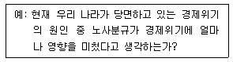
- 단순성
- 가치중립성
- 적절한 언어구사
- 명확성
(정답률: 50%)
40. 이론적 개념을 경험적 수준의 변수로 전환시키는 것은?
- 서열화
- 수량화
- 척도
- 조작화
(정답률: 65%)
41. 자료정선과정(date cleaning)에서 오류가 발견되었을 경우, 이를 해결할 방법 중 적절하지 않는 것은?
- 결측값으로 처리한다.
- 전체 사례를 삭제한다.
- 질문지의 응답을 다시 확인한다.
- 정해진 추정원칙에 따라 추정치를 삽입한다.
(정답률: 알수없음)
42. 질문순서를 배열할 때, 일반적으로 염두에 두어야 할 요소 중 잘못된 것은?
- 시작하는 질문은 쉽고 흥미를 유발할 수 있어야 한다.
- 비슷한 유형의 질문은 모두 한 곳에 모아서 질문하도록 한다.
- 일반적인 내용을 먼저 묻고, 다음에 특수한 것을 묻도록 한다.
- 인적사항이나 사생활에 대한 질문은 가급적 마지막에 묻는다.
(정답률: 70%)
43. 조사자가 소수의 응답자 집단에게 특정 주제에 대하여 토론케 한 다음 필요한 정보를 알아내는 자료수집방법은?
- 현지조사법 (field survey)
- 비지시적 면접 (non-directive interview)
- 표적집단면접 (focus group interview)
- 델파이 서베이 (delphi survey)
(정답률: 65%)
44. PC통신 이용자에 한하여 PC통신을 이용한 조사를 실시하고자 한다. 이 경우 유의해야 할 점으로 잘못된 것은?
- 한 질문이 한 화면을 넘어가지 않도록 한다.
- 특정 시간대에 국한하여 조사하지 않도록 한다.
- 누구나 원하는 사람은 응답하도록 한다.
- 동일인이 여러 번 응답하지 않도록 한다.
(정답률: 55%)
45. 총화평정척도에 대한 설명으로 틀린 것은?
- 예비적 문항의 선정 단계를 거쳐서 최종의 척도를 구성하는 이중단계를 거친다.
- 평가자의 주관이 개입될 가능성이 크다.
- 리커트(Likert)척도라고 부른다.
- 전체 문항에 대한 응답의 총평점이 태도의 측정치가 된다.
(정답률: 54%)
46. 연구방법을 기술한 내용 중 올바른 것은?
- 사회현상을 설명할 때에는 가급적 많은 변수(변인, variable)를 동원하는 것이 좋다.
- 동일한 자료를 분석하여 서로 상이한 결론에 도달할 수는 없다.
- 연구대상 개체에 대한 설명은 이를 일반화시킨 포괄적 설명보다 우월하다.
- 사회현상에 대한 설명은 단순한 상관관계보다 인과관계로 제시하여 주는 것이 좋다.
(정답률: 65%)
47. 리커트척도의 장점이 아닌 것은?
- 항목의 우호성 또는 비우호성을 평가하기 위해 평가자를 활용하므로 객관적이다.
- 적은 문항으로도 높은 타당도를 얻을 수 있어서 매우 경제적이다.
- 다섯 개의 응답 카테고리가 명백하게 서열화되어 응답자에게 혼란을 주지 않는다.
- 응답자료에서 지표를 추출하여 구성하는 체계적이고 세련된 기법이다.
(정답률: 25%)
48. 신뢰도와 타당도에 대한 설명 중 올바르게 서술한 것은?(오류 신고가 접수된 문제입니다. 반드시 정답과 해설을 확인하시기 바랍니다.)
- 타당도가 높으면 신뢰도도 높다.
- 신뢰도는 타당도를 보장하지 않는다.
- 타당도에 우선해서 신뢰도가 유지되어야 한다.
- 타당도의 문제는 주로 자료수집과정에서 발생하며, 신뢰도의 문제는 주로 측정도구작성과정에서 발생한다.
(정답률: 22%)
49. 주부들의 환경의식을 조사한 척도의 응답 예가 <표1>과 같다. 각 문항 점수를 합산하여 환경의식수준을 측정한다면 측정의 수준은?
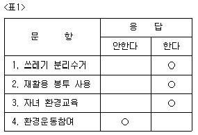
- 명목척도(범주척도)
- 서열척도(순위척도)
- 등간척도(구간척도)
- 비율척도(비례척도)
(정답률: 28%)
50. 집단조사의 장점이 아닌 것은?
- 동일성 확보가 가능하다.
- 비용과 시간을 절감할 수 있다.
- 조사자와 직접 대화할 수 있다.
- 조직체와 개인 응답자의 협조를 구하기가 용이하다.
(정답률: 28%)
51. 태도척도에서 부정적인 극단에는 1점을, 긍정적인 극단에는 5점을 부여한 후, 전체문항의 총점 또는 평균을 가지고 태도를 측정한 것은?
- 서스톤척도
- 리커트척도
- 거트만척도
- 의미분화척도(어의차이 척도)
(정답률: 34%)
52. ‘권위주의적 태도’와 같이 하나의 추상적인 개념에 대해 다수의 문항을 지표로 사용하는 척도를 이용하여 계산하거나 적용할 수 있는 통계량 또는 통계방법이 아닌 것은?
- 상관계수(Correlation coefficient)
- 변동계수(Coefficient of variation)
- 회귀분석(Regression analysis)
- 요인분석(Factor analysis)
(정답률: 19%)
53. 측정을 위해서는 대상의 속성을 적절히 대표할 수 있는 지표를 발견하여야 한다. 예를 들어 교육수준을 측정하기 위한 지표는 중졸, 고졸, 대졸 등의 최종학교 졸업수준 등을 들 수 있다. 이와 같은 지표의 구비조건이 아닌 것은?
- 절대성
- 타당성
- 신뢰성
- 확인의 용이성
(정답률: 62%)
54. 각 문항이 척도상의 어디에 위치할 것인가를 평가자들로 하여금 판단케 한 다음 이를 바탕으로 대표적인 문항들을 선정하여 척도를 구성하는 것은?
- 서스톤척도
- 리커트척도
- 거트만척도
- 의미분화척도
(정답률: 42%)
55. 일반적인 우편조사의 특성에 해당되지 않는 것은?
- 회수율이 낮은 경우 표본의 대표성을 확보하기 어렵다.
- 응답자에 대한 익명성과 비밀유지에 대한 확신을 부여하기 쉽다.
- 표본으로 추출된 대상자가 직접 응답하지 않았을 경우 확인하기 어렵다.
- 통상 조사에서 필요한 시간이 전화조사보다는 짧다.
(정답률: 65%)
56. 개인의 프라이버시 보호와 면접조사가 어려울 때 조합하여 실시할 수 있는 방법으로 가장 적합한 것은?
- 배포조사와 우편조사
- 배포조사와 전화조사
- 우편조사와 전화조사
- 집합조사와 전화조사
(정답률: 42%)
57. 다음 중 패널(panel) 조사의 특징이 아닌 것은?
- 패널조사는 초기 연구비용이 비교적 많이 드는 연구 방법이다.
- 패널조사는 조사대상자로부터 추가적인 자료를 얻기가 비교적 쉽다.
- 패널조사는 조사대상자의 태도 및 행동변화에 대한 정확한 분석이 가능하다.
- 패널조사는 최초 패널을 다소 잘못 구성하더라도 장기간에 걸쳐 수정이 가능하다는 장점이 있다.
(정답률: 67%)
58. 척도상의 통계적 기법으로 적당치 않는 것은?
- 개별문항과 척도간의 상관관계
- 개별문항들에 대한 요인분석
- 개별문항에 대한 평균값과 표준편차의 산출
- 문항별 기준변수와의 상관관계 분석
(정답률: 42%)
59. 다음의 열거된 예 중, 다른 것들과 그 측정수준을 달리하는 것은?
- 상층 - 중상층 - 중하층 - 하층
- 전적으로 동의한다 - 동의한다 - 그저 그렇다 - 반대한다 - 전적으로 반대한다
- 수도권지역 - 중부지역 - 영남지역 - 호남지역
- 보수적 - 중도적 - 진보적
(정답률: 50%)
60. 사회조사에서 외적타당도가 의미하는 바는?
- 조사결과의 일반화가 가능한가
- 척도의 변별력이 충분히 있는가
- 조사결과를 공식 발표할 수 있는가
- 척도의 타당성을 전문가에게 검증 받았는가
(정답률: 50%)
3과목: 사회통계
61. 가설검증에서 제1종 오류를 범할 확률을 무엇이라고 하는가?
- 유의수준
- 유의확률(P-값)
- 오차한계
- 신뢰수준
(정답률: 45%)
62. 9개의 데이터에서 분산이 36이었다, 표준오차(se)의 값은 얼마인가?
- 2/3
- 2
- 3
- 4
(정답률: 37%)
63. 통계적 가설검증을 실시할 때 유의수준과 오류의 발생확률과의 관계에 대해서 잘못 서술한 것은?
- 가설검증에서 유의수준이란 제1종 오류를 범할 때의 최대 허용오차이다.
- 유의수준을 감소시키면(예를 들어 0.⑤에서 0.01로) 제2종 오류의 확률 역시 감소한다.
- 제2종 오류의 확률, 즉 거짓인 귀무가설을 받아들인 확률은 쉽게 결정할 수 없다.
- 유의수준은 표본의 결과가 모집단의 성질을 반영하는 것이 아니라 표본의 특성에 따라 나타날 확률의 범위이다.
(정답률: 50%)
64. 다음 중 정규곡선의 특징이 아닌 것은?
- 정규곡선은 평균을 기준으로 대칭한다.
- 정규곡선이 갖는 평균과 중앙값은 같다.
- 정규곡선면적은 분포의 평균과 표준편차에 따라 달라진다.
- 정규곡선과 밑 변 사이에 둘러싸인 면적은 곡선의 양쪽 방향으로 무한대까지 연장된다.
(정답률: 67%)
65. 대표본에서 변동계수(coefficient of variation) c를 이용하여 모평균 μ에 대한 95% 신뢰구간을 표시하고자 한다. 표본평균을  , 표본크기를 n이라 할 때, 올바른 공식은?
, 표본크기를 n이라 할 때, 올바른 공식은?
 ±1.96 c/√n
±1.96 c/√n (1±1.96 c/√n)
(1±1.96 c/√n)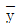
(1±1.96 c)- (
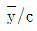
)±1.96 s/√n
(정답률: 알수없음)
66. X가 N (u,σ2)인 분포를 따를 경우, Y=aX+b의 분포는?
- 중심극한 정리에 의하여 표준정규분포 N(0, 10
- a와 b의 값에 관계없이 N(μ, σ2)
- N(aμ+b, a2σ2+b)
- N(aμ+b, a2σ2)
(정답률: 30%)
67. 다음 그림과 같은 분포를 보이는 자료에서 평균, 중간값, 최빈치의 값을 비교한 것은?
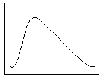
- 평균 < 최빈치 < 중앙값
- 평균 < 중앙값 < 최빈치
- 최빈치 < 중앙값 < 평균
- 최빈치 < 평균 < 중앙값
(정답률: 50%)
68. 평균 μ, 표준편차 σ인 정규모집단에서 추출된 표본평균
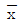
가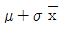
와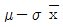
사이에 존재할 가능성은 대략 몇 %인가?- 50
- 68
- 95
- 99
(정답률: 47%)
69. 총선을 앞두고 한 지역구의 유권자 400명을 대상으로 조사한 결과 A후보의 지지율은 30.5%, B후보의 지지율은 34.8%로 나왔다. 자료에 따르면 이번 조사는 95% 신뢰수준으로 오차한계가 ±5%라고 하였다. 이 때 결과의 해석으로 옳은 것은?
- 실제 선거에서 A후보가 앞설 수도 있다.
- A후보는 지지율이 낮으므로 포기하는 편이 낫다.
- B후보가 지지율이 높으므로 당선 가능성이 높다.
- 500명을 대상으로 조사한다면 오차한계는 ±5%보다 크게 된다.
(정답률: 63%)
70. 결정계수(coefficient of determination) R2 에 대한 설명으로 틀린 것은?
- 총제곱의 합 중 설명된 제곱의 합의 비율을 뜻한다.
- 종속변수에 미치는 영향이 적은 독립변수가 추가된다면 결정계수는 변하지 않는다.
- R2의 값이 클수록 회귀선으로 실제 관찰치를 예측하는데 정확성이 높아진다.
- 독립변수와 종속변수간의 표본상관계수 γ의 제곱값과 같다.
(정답률: 54%)
71. 설문을 이용한 여론조사에서, 95% 신뢰도에서 ±5%이내의 정확도를 유지하려면 최소 몇 명 정도를 표집해야 하는가?
- 400
- 900
- 1100
- 2000
(정답률: 47%)
72. 아래 내용에 대한 가설형태는?
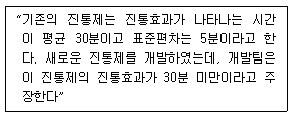
- H0:μ＜30, H1:μ＞30
- H0:μ=30, H1:μ＜30
- H0:μ＞30, H1:μ=30
- H0:μ=30, H1:μ≠30
(정답률: 53%)
73. 분산분석에 대한 설명 중 옳은 것으로 짝지어진 것은?
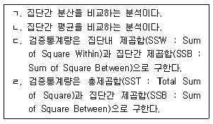
- ㄱ, ㄷ
- ㄱ, ㄹ
- ㄴ, ㄷ
- ㄴ, ㄹ
(정답률: 36%)
74. 회귀분석에서 독립변수에 의해서 설명되는 종속변수의 비율을 무엇이라고 하는가?
- 회귀계수 (regression coefficient)
- 신뢰계수(coefficient of confidence)
- 결정계수(coefficient of determination)
- 자유도(degree of freedom)
(정답률: 28%)
75. 두 정당(A, B)에 대한 선호도가 성별에 따라 다른지 알아보기 위하여 1000명을 임의추출하였다. 이 경우에 가장 적합한 통계분석법은?
- 분산분석
- 회귀분석
- 인자분석
- 교차분석
(정답률: 47%)
76. 다음의 분산분석표에서 결정계수(R2)는?
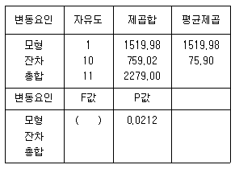
- 0.67
- 0.49
- 0.09
- 0.⑤
(정답률: 60%)
77. 다음의 산포도를 나타내는 측정치 가운데 자료가 비대칭인 경우에 많이 사용되는 것은 무엇인가?
- 범위
- 사분편차
- 표준편차
- 변동계수
(정답률: 28%)
78. 미국에서 흑인과 백인의 교육수준별 주관적 계급의식에 대한 조사를 통해 얻은 자료에 회귀분석을 적용한 결과 아래 그림과 같은 관계를 얻을 수 있었다. 다음 중 이 그림에 대한 설명으로 잘못된 것은 무엇인가? (단, 이 때 상, 중, 하로 표시된 것은 그림의 편의를 위한 것으로 실제 측정과 분석은 연속변수로 이루어졌다.)
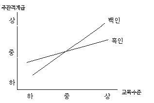
- 흑인과 백인 모두 교육수준이 상승함에 따라 주관적 계급의식 역시 높아진다.
- 흑인의 주관적 계급의식은 중간 이상의 교육수준을 받았을 경우 백인보다 낮지만 그 이하일 경우 백인보다 높다.
- 교육수준이 흑인의 주관적 계급의식에 미치는 영향의 정도는 백인에 비해 더 낮다.
- 주관적 계급의식에 대한 영향을 미치는 독립변수로서 인종과 교육수준 간에는 통계적 상호작용이 존재하지 않는다.
(정답률: 40%)
79. 분산분석을 수행하는데 필요한 가정이 아닌 것은?
- 독립성(independence)
- 불편성(unbiasedness)
- 정규성(normality)
- 등분산성(homoscedasticity)
(정답률: 17%)
80. 다음 통계자료에서 예의 최빈값(mode)은 무엇인가?
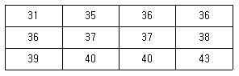
- 35
- 36
- 37
- 40
(정답률: 75%)
81. 모집단의 평균 μ와 표준편차 σ를 알고 있으며 표본의 크기 N이 클 때 표본평균의 표본분포 형태는 정규분포의 모양은 나타낸다. 이 경우 우리가 알 수 있는 것은?
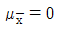
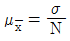
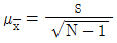
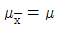
(정답률: 31%)
82. 만일 자료에서 모평균 μ에 대한 95%의 신뢰구간이 ( -0.042, 0.522 )로 나왔다면, 유의수준 0.⑤에서 귀무가설 H0: =0 대립가설 H1:μ≠0 검증 결과는 어떻게 해석할 수 있는가?
- 신뢰구간과 가설검증은 무관하기 때문에 신뢰구간을 기초로 검증에 대한 어떠한 결론도 내릴 수 없다.
- 신뢰구간이 0을 포함하기 때문에 귀무가설을 기각할 수 없다.
- 신뢰구간의 상한이 0.522로 0보다 상당히 크기 때문에 귀무가설을 기각해야 한다.
- 신뢰구간을 계산할 때 표준정규분포의 임계값을 사용했는지, 또는 t 포의 임계값을 사용했는지에 따라 해석이 다르다.
(정답률: 50%)
83. 상관계수에 관한 다음의 기술 중 옳은 것끼리 짝지어진 것은?
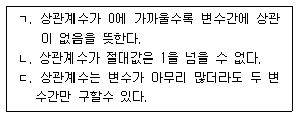
- ㄱ, ㄴ
- ㄱ, ㄷ
- ㄴ, ㄷ
- ㄱ, ㄴ, ㄷ
(정답률: 29%)
84. 교육수준에 따른 생활만족도의 차이를 다양한 배경변수를 통제한 상태에서 비교하기 위하여 다중회귀분석을 실시하고자 한다. 교육수준을 5개의 범주로(무학, 초졸, 종졸, 고졸, 대졸 이상) 측정하였다. 이 때 교육수준별 차이를 나타내는 가변수(dummy variable)를 몇 개 만들어야 하겠는가?
- 1개
- 2개
- 4개
- 5개
(정답률: 46%)
85. 정규분포를 따르는 집단의 모평균의 값에 대하여 H0:μ=50, V.S H1:μ＜50 을 세우고 표본 100개의 평균을 구한 결과
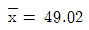
를 얻었다. 모집단의 표준편차가 5 라면 유의확률은 얼마인가? ( 단, P(Z≤-1.96)=0.025, P(Z≤-1.645)=0.⑤ )- 0.25
- 0.⑤
- 0.95
- 0.975
(정답률: 24%)
86. 교육수준과 정치적 성향의 관계를 알아보기 위하여 조사를 실시하였다. 조사한 자료를 분석한 결과 교육년수로 측정한 교육수준의 분산이 70, 정치적 성향의 분산이 50, 그리고 두 변수의 공분산으로 √560이 나타났다. 이 때 두 변수 간의 적률상관계수의 값은 얼마인가?
- 0.1
- 0.2
- 0.3
- 0.4
(정답률: 34%)
87. 일원분산분석을 시행하였다. 처리는 모두 5개이며, 각 처리당 6회씩 반복 실험을 하였다. 결정계수의 값이 0.6, 처리평균제곱의 값이 300이라면 오차제곱합의 값은 얼마인가?
- 800
- 900
- 1600
- 1800
(정답률: 45%)
88. 어떤 대학에서 남녀 교수들에 대한 강의 평가를 위하여 남자 교수 10명, 여자 교수 10명을 임의표집하여 각 교수의 강좌를 수강하는 학생들 2000명을 대상으로 설문조사를 하였다. 이 경우 표본크기는 얼마인가?
- 10
- 20
- 2000
- 2020
(정답률: 57%)
89. 직업별로 소비자행동에 어떤 차이가 있는지를 보기 위해서 취업주부를 대상으로 전문직, 사무직, 생산직으로 나누어 소비성향을 측정하였다. 이때 소비행동은 여러 개의 문항을 이용하여 연속변수의 척도를 구성하였다. 직업별로 소비행동의 차이가 있는지를 알아보려면 어떤 통계적 분석을 실시하는 것이 가장 적합하겠는가?
- 분할표분석
- 회귀분석
- 상관관계분석
- 분산분석
(정답률: 50%)
90. 종업원 수가 1600명인 회사의 종업원 월 평균용돈을 조사하였더니, 평균 10,000원, 표준편차 5,000원으로 나왔다. 이 회사의 종업원 가운데 400명을 임의로 선발하여 표본으로 한다면 이 표본평균의 표준편차는?
- 125
- 250
- 2500
- 5000
(정답률: 50%)
91. 정규분포에 대한 설명 중 옳은 것은?
- 모든 연속형의 확률변수는 정규분포에 따른다.
- 정규분포를 따르는 변수는 평균이 0이고 분산이 1이다.
- 이항분포를 따르는 변수는 언제나 정규분포를 통해 확률값을 구할 수 있다.
- 정규분포를 따르는 변수는 평균, 중위수, 최빈값이 모두 같다.
(정답률: 62%)
92. 다음 중 바람직한 추정량(estimator)의 선정기준이 아닌 것은?
- 할당성(quota)
- 불편성(unbiasedness)
- 효율성(efficiency)
- 일치성(consistency)
(정답률: 알수없음)
93. ‘성별 평균소득’에 관한 설문조사자료를 정리한 결과, 집단내 편차제곱의 평균(MSw)은 50, 집단간 편차제곱의 평균(MSb)은 25로 나타났다. 이 경우에 F값은?
- 0.5
- 32
- 25
- 75
(정답률: 44%)
94. 어느 고등학교에서 임의로 50명의 학생을 추출하여 몸무게(㎏) 와 키(㎝)를 측정하였다. 50명의 고등학교 학생들의 몸무게와 키의 산포도를 비교하기에 가장 적합한 통계는?
- 평균
- 상관계수
- 변이(변동)계수
- 분산
(정답률: 59%)
95. 두 변수 X와 Y가 서로 독립일 때 X와 Y의 회귀직선의 기울기는?
- 0
- 1
- 0.5
- -1
(정답률: 34%)
96. 어느 선거구에서 갑후보의 지지율을 조사하기 위하여 100명의 유권자를 조사한 결과 갑후보의 지지율이 65%이었다. 갑후보의 지지율에 대한 95%의 신뢰구간은?
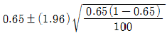
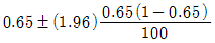
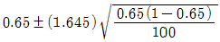
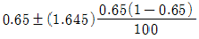
(정답률: 50%)
97. 다음의 상황에 알맞은 검증방법은?
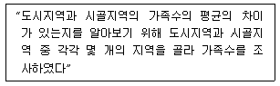
- 독립표본 t-검증
- 대응표본 t-검증
- x2-검증
- F-검증
(정답률: 31%)
98. 평균이 μ, 표준편차가 σ인 모집단에서 크기 n의 임의표본을 반복추출하는 경우, n이 크면 중심극한정리에 의하여 표본합의 분포는 정규분포로 수렴한다. 이 때 정규분포의 형태는?
- N(μ, σ2/n)
- N(μ, nσ2)
- N(nμ, nσ2)
- N(nμ, σ2/n)
(정답률: 50%)
99. 평균이 μ, 표준편차가 σ인 모집단에서 짝수 크기 n의 임의표본(확률표본)을 추출하여 임의로 두 부분으로 분할하였다. 앞부분의 평균
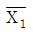
과 뒷부분의 평균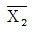
의 차이는 대략 어떤 표집분포를 따르게 되는가?- 평균이 0이고 표준편차가 σ/√n인 정규분포
- 평균이 0이고 표준편차가 σ/√n인 정규분포
- 평균이 0이고 표준편차가 2∙σ/√n인 정규분포
- 평균이 0이고 표준편차가 2∙σ/n인 정규분포
(정답률: 22%)
100. 표준화 변환을 하면 변화된 자료의 평균과 표준편차의 값은?
- 평균 = 0, 표준편차 = 1
- 평균 = 1, 표준편차 = 1
- 평균 = 1, 표쥰편차 = 0
- 평균 = 0, 표준편차 = 0
(정답률: 50%)